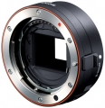

无忌
器材库
全部器材
产品年表
名词百科
榜单
器材库
> 镜头转接环 > LA-EA1

索尼
LA-EA1
4.5
综合评分
分类
镜头转接环
点评
1 条
图片
0 张
评测
0 篇
可以转接索尼A卡口镜头至NEX系列产品上。
产品类型
镜头转接环
综合评分
4.5分
无忌评测
暂无评测
规格参数
网友点评
(1)
产品图 / 样片
(0)
评测文章
(0)
该产品没有存档的规格参数
Pantrol
2012-07-08 04:00
4.5 分
美观性 5.00
趣味性 4.00
耐用性 5.00
性价比 4.00
总评
不能自动对焦，但美观
优点
1、小巧； 2、美观。
缺点
不能自动对焦
该产品暂无存档的产品图
评测 / 相关文章
该产品暂无存档的评测文章
相关文章
［资讯］索尼NEX5：不谈内涵，先言外貌
（原站已下线）
［资讯］索尼两款NEX系列相机及多款镜头发布
（原站已下线）
［资讯］索尼NEX-3
（存档）
［资讯］索尼NEX-5
（存档）